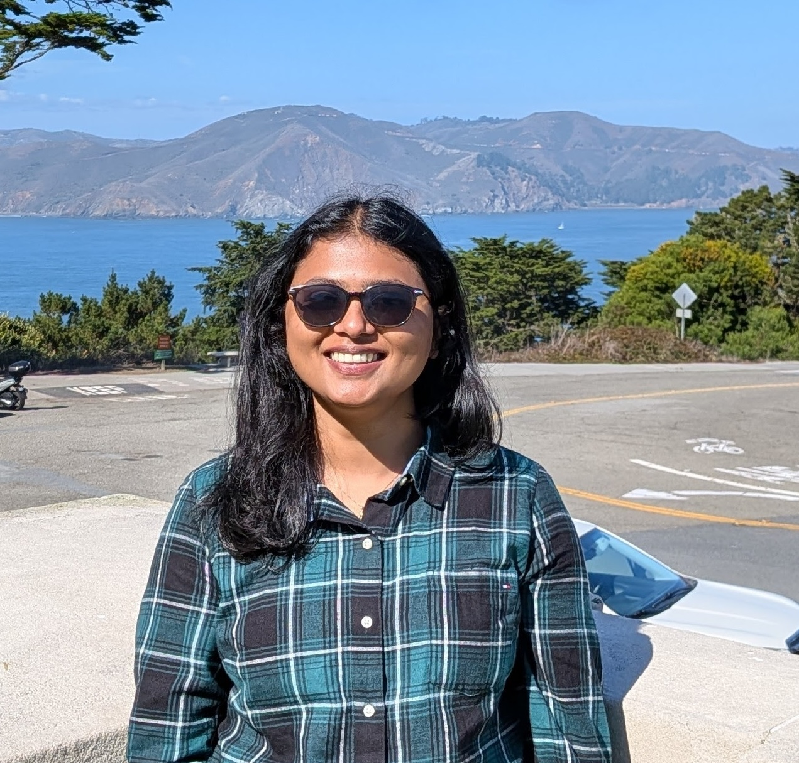

About

I am a postdoctoral scholar at UC Berkeley and Lawrence Berkeley National Laboratory, working with Prof. Teresa Head-Gordon. My research spans quantum chemistry, molecular simulation, and machine learning to understand and predict behavior in catalytic and aqueous systems. Previously, I completed my Ph.D. with Prof. Krishnan Raghavachari at Indiana University, developing fragmentation-based and data-driven approaches for molecular property prediction.
Postdoctoral Research — UC Berkeley / LBNL
- N2 Reduction at Magnetite–Water Interfaces: Ab initio molecular dynamics and free-energy simulations to elucidate adsorption, activation, and PCET steps at Fe3O4–H2O interfaces under ambient conditions; integrated with AP-XPS insights.
- Hybrid ML Corrections for Polarizable Force Fields: Delta-learning models (PyTorch) trained on ab initio data to refine AMOEBA energies/forces for water and ion–water clusters; improved accuracy and transferability while preserving physical structure.
- Dielectric Suppression in Electrolytes: Long-timescale simulations quantifying ion-induced dielectric decrement; comparative analysis with hybrid DFT (SCAN, PBE0-D3) benchmarks.
- Data & Workflow Engineering: Automated dataset generation (CP2K + ASE), reproducible pipelines, and large-scale training/inference on NERSC GPU/CPU resources.
Ph.D. Research — Indiana University (Raghavachari Group)
- MIM-ML for NMR Prediction: Fragmentation-based framework with physics-aware features (Born radii, partial charges, bond topology); random-forest & delta-learning models achieving near-DFT accuracy for proteins and nucleic acids.
- CO2 Reduction Catalysis: Multi-scale DFT studies on Re/Mo complexes; mapped PCET pathways and solvent effects to rationalize activity/selectivity trends.
- Methodology & Tooling: High-throughput quantum workflows, feature engineering for chemical ML, and validation against experimental observables where possible.
- SCALE: (Scaffold Conscious Agent for Learning & Exploration) • Designed a scaffold aware molecular optimizer with guardrails (sanitize, PAINS, SA), physics penalties (MMFF94 strain/atom), and diversity/scaffold constraints for hit finding and lead optimization • Implemented surrogate modeling (RF ensemble/UCB) and an agentic controller adapting operators and exploration/diversity per round; exported JSON logs and slide ready plots (learning curves, QED–SA tradeoff, scaffold usage, top grids). • Upgraded to an LLM driven proposer with structured reasoning and safe edits; built an interactive UI; applied to chemosensory use cases
- Mechanistic Analysis of Odorant Antagonism in Drosophila Or56a • Developed a structure-based docking workflow to differentiate agonist vs antagonist binding modes in Or56a using AlphaFold2 models and pocket topology analysis. • Validated AlphaFold2-predicted Or56a structure through RMSD alignment with experimental ORs (8V02, 6C70). • Proposed a dual-antagonism mechanism based on site-specific binding of geosmin and linalool. • Completed independently as part of a technical assignment using open-source tools and data.
Publications
- J. Am. Chem. Soc. (2025) — Ammonia Synthesis under Ambient Conditions via Fe3O4–Water Interfaces — Lead Author.
- J. Chem. Theory Comput. (2023) — MIM-ML: Fragment-Based Machine Learning for NMR Prediction — Lead Author.
- Phys. Chem. Chem. Phys. (2020) — Accurate Fragmentation-Based Predictions of NMR Chemical Shifts for Proteins . — Lead Author.
- Inorg. Chem. (2022) — Low-Energy Pathways for Electrocatalytic CO2 Reduction at Rhenium Complexes . — Lead Author.
Complete and updated list on Google Scholar.
Awards & Highlights
- ALS Science Highlight (2025): “From Magnetite to Ammonia, A New Line of Production.”
- Outstanding Poster Award, Molecular Quantum Mechanics Conference (2022).
- INSPIRE Fellowship, Government of India (2012–2017).
- Member, Sigma Xi Scientific Research Honor Society (2025).
Vision
I am broadly interested in research at the interface of machine learning and chemistry. My long-term goal is to build physics-informed, data-efficient models and scalable simulation tools that connect quantum accuracy with chemical realism—accelerating discovery across catalysis, solvation, and molecular design while keeping results interpretable and experimentally grounded.
Contact
- Email: schandy@berkeley.edu
- GitHub: github.com/schandy2211
- LinkedIn: linkedin.com/in/sruthy-k-chandy
- Google Scholar: scholar.google.com
- CV (PDF): view/download
- Groups: Ph.D. — Raghavachari Lab | Postdoc — Head-Gordon Lab